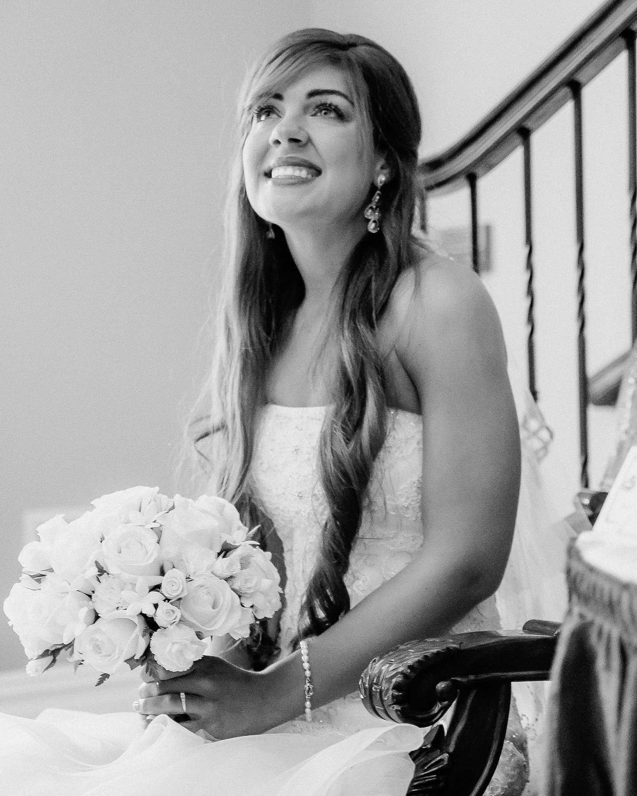

Portraits & Headshots
Natural, confident portraits for professionals, creatives and personal brands.
PHOTOGRAPHY · NEW YORK / NEW JERSEY
Portraits, events and visual stories photographed with a natural, polished and timeless approach.
View selected work ↗
A VISUAL PARTNER
I create photographs that feel authentic without losing the polish needed for professional work — from headshots and portraits to events, editorial stories and lifestyle imagery.
WHAT I PHOTOGRAPH
Natural, confident portraits for professionals, creatives and personal brands.
Candid moments, details and atmosphere — photographed without getting in the way.
Story-driven imagery for organizations, publications, websites and social media.
People, places and culture photographed with a clean, contemporary point of view.
SELECTED WORK
A small selection from the contact sheet. Select a frame to enlarge it.
“Whether it's a headshot, a portrait, a busy event or a first dance, I want people to look like themselves on a good day.”
ABOUT IVAN
I'm a photographer based in New Jersey, working across New York and New Jersey. By day I lead web development and photography for NYU Grossman School of Medicine's Office of Science and Research. On my own time I shoot portraits, weddings, couples, street and sports, on a Canon R6, edited in Lightroom Classic and Photoshop.
My street photography is moody and cinematic. For clients and my NYU work, I go light and airy: soft, film-inspired color with natural skin tones that still look true to life years from now.
Whether I'm photographing a headshot, a room full of people or a once-in-a-lifetime celebration, my goal is the same: make the experience comfortable and deliver photographs you'll actually want to keep.
Work with me ↗HOW IT WORKS
Share the date, location and what you're hoping to create.
We'll figure out timing, location, mood and the details that matter.
A relaxed, directed approach when needed — candid when the moment takes over.
Your edited images arrive ready to share, print and enjoy.
LET'S CREATE SOMETHING
Tell me a little about your project, and I'll get back to you with availability and next steps.
Email me ↗